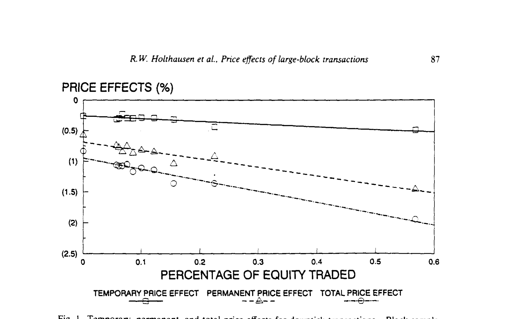
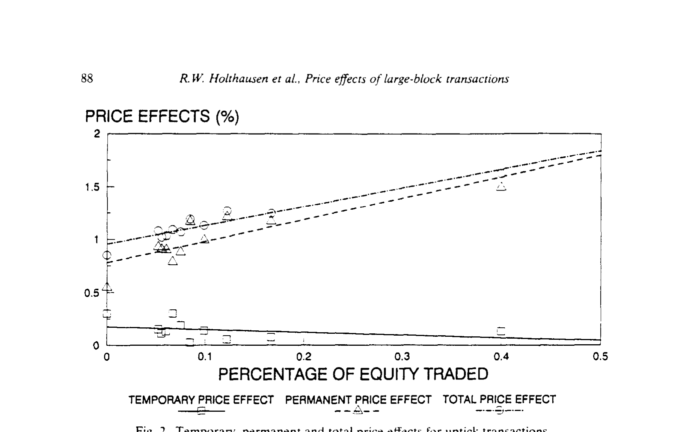
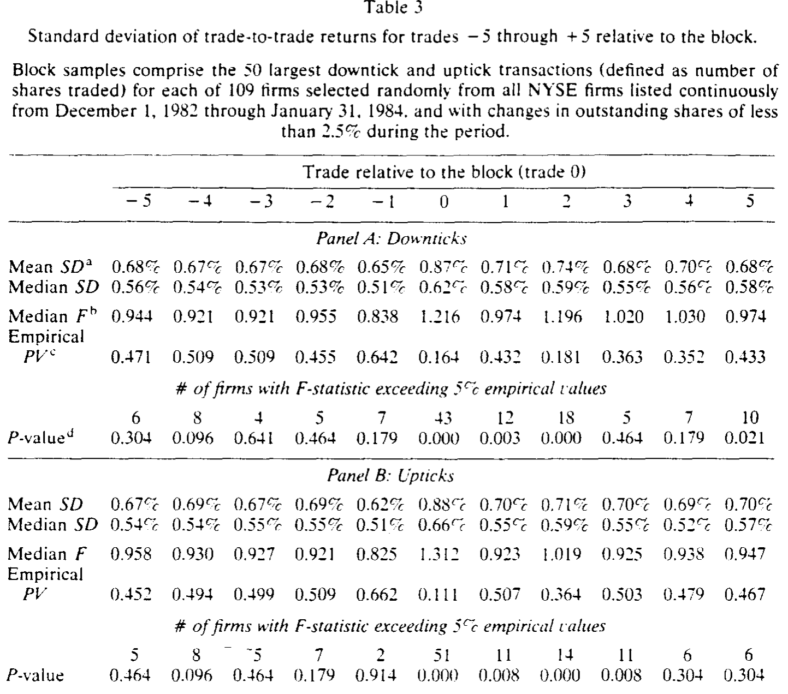
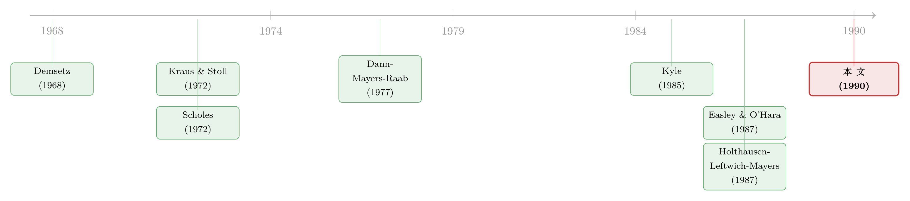

价格在第几笔交易里「认输」？——大宗交易的临时与永久冲击
本文读的是 Holthausen, Leftwich & Mayers (1990, Journal of Financial Economics)：用逐笔成交数据追踪纽交所大宗交易后的价格，发现价格最多三笔交易就回到新均衡、且绝大部分调整发生在第一笔；更要紧的是，大宗交易的价格冲击以永久为主、临时为辅，而临时冲击只在卖方发起时随成交量放大，买方发起时甚至不比一手 100 股大。
1 一个被「平均」掩盖的问题
先想象一个画面。某只股票正以每股 50 美元安静地成交，忽然一笔 20 万股的卖单砸下来，成交在 49 美元。然后呢？下一笔回到 49.3，再下一笔 49.4……到底要多久，价格才"消化"完这笔大单、停在一个新的均衡上？而这个新均衡，是回到 50（说明刚才那 1 美元只是给接盘人的"过路费"），还是永远停在 49.5（说明这笔卖单真的让市场重新看低了这家公司）？
这两个问题——调整有多快、调整有多深——正是这篇论文要回答的全部。它们听上去技术，背后却是三件大事：股东的财富在一笔大单里被切走了多少、交易一个大宗的真实成本是多少、以及一个"知道有大单要来"的交易员，该不该担心自己一"亮单"就把信息泄露给了市场。
首先要厘清一对概念。临时价格效应（temporary price effect）指的是大宗交易后价格的回弹（rebound）——它来了又走，像水面被石头砸出的涟漪。永久价格效应（permanent price effect）则是大宗交易前的均衡价到交易后的均衡价之间那段不再回头的位移。把一笔大单的总冲击拆成这两块，是这篇文章所有结论的支点。
临时效应通常被归因于流动性成本（liquidity costs）或暂时的信息效应；永久效应则被归因于需求/供给曲线不完全弹性或永久的信息效应。这篇论文的野心，是用数据把"临时 vs 永久"这条线划清楚。
接着，一个自然的问题是：以前的人不是早就研究过大宗交易吗？是的，但绝大多数早期研究是横截面（cross-sectional）的，而且依赖收盘价来估计价格效应——Kraus & Stoll (1972)、Ball & Finn (1983)、Holthausen, Leftwich & Mayers (1987) 都是如此。收盘价的麻烦在于：它一天只有一个,既看不清"第几笔交易价格归位"，也会被一天里买卖单的随机配比污染。这篇 1990 年的论文换了把更利的刀——逐笔成交数据（transactions data），于是"调整速度"这个以前根本量不了的维度，第一次被看清了。
2 数据：把"最大的那 50 笔"挑出来
论文的样本来自 Francis Emory Fitch 公司的纽交所逐笔成交序列文件，区间是 1982-12-01 到 1984-01-31。每笔成交都带着价格、精确到分钟的时间戳、以及成交股数。
作者先从 CRSP 月度文件里筛出样本期内流通股数变动小于 2.5% 的纽交所公司（避免增发/回购搅局），得到 654 家，再随机抽 109 家。对每一家公司，按成交股数找出三种 tick 类型（上涨 tick、下跌 tick、零 tick）各自最大的 50 笔成交,把它们各自定义为"该公司的大宗"。分析就建立在每家公司 50 笔下跌 tick 块 + 50 笔上涨 tick 块，外加每个块前后各五笔交易之上。
这里有一个很聪明的设计：用"成交股数最大的 50 笔"来定义大宗，绕开了"多大才算大"这个老大难问题。横截面研究通常要用美元金额、占流通股比例、或相对正常成交量来界定大宗,而每种尺子都会带来不同的抽样偏差（这正是 HLM 1987 讨论过的）。这里只问"最大"，不问"多大"。
怎么判断一笔大单是买还是卖？数据并不标注。作者沿用tick 规则（tick rule）：成交价高于前一笔（上涨 tick）记为买方发起（block purchase），低于前一笔（下跌 tick）记为卖方发起（block sale），持平（零 tick）的无法归类、剔除。于是有了一个"构造性"的特征——下跌 tick 样本里块交易那一笔的收益天然为负，上涨 tick 样本里天然为正。这一点在读结果时务必记牢。
基准（benchmark）则取每个块之前第 -20 到 -11 笔的逐笔收益,每家公司最多 1,500（= 3 种 tick × 10 笔 × 50 块）笔。一切超额收益,都是相对这个"平常日子"的逐笔收益算出来的。
3 度量：超额收益与方差比
逐笔超额收益的核心定义是：把每个块前后第 \(t\) 笔的逐笔收益，减去该公司基准期的平均逐笔收益 \(BEN_i\)，再在 50 个块上平均。基准本身是：
$$ BEN_i \;=\; \sum_{h=1}^{N_i}\sum_{t=-20}^{-11} R_{h,i,t} \,/\, N_i, \qquad i = 1,\dots,109 $$
其中 \(R_{h,i,t}\) 是公司 \(i\) 第 \(t\) 笔、第 \(h\) 个块的逐笔收益，\(N_i \le 1500\)。检验单家公司某一笔的均值是否异于基准，用的是两样本（方差不等）\(t\) 统计量 \(tx_{i,t}=(R_{i,t}-BEN_i)/SD_{i,t}\)，以及对中位数的 Mann–Whitney \(U\) 统计量。
而要回答"波动率多久回归正常"，作者构造了一个方差比 \(F\) 统计量：把块前后第 \(t\) 笔逐笔收益的方差，比上基准期的方差——
$$ F_{i,t} \;=\; \sigma^2(R_{i,t}) \,/\, \sigma^2(BEN_i), \qquad t=-5,\dots,+5,\;\; i=1,\dots,109 $$
\(F\) 显著大于 1，就说明那一笔附近的波动被放大了。直觉很朴素：大宗交易前后若不确定性上升,做市商（specialist）会临时拉宽买卖价差，这未必体现在均值里，却会在方差里露马脚。
4 调整有多快：三笔之内，且第一笔最关键
现在进入正题。下跌 tick（卖方发起）：块交易那一笔的均值/中位数价格反应是 -1.23% 和 -0.99%，109 家公司的 \(t\) 值全部在 5% 水平上显著为负（这一半是 tick 规则构造出来的）。真正有意思的是紧接着的第 +1 笔：均值/中位数超额收益 0.28% 和 0.18%，可靠地大于零（中位数 \(t=2.60\)，中位数 \(U=2.60\)），109 家里有 80 家的 \(U\)、74 家的 \(t\) 显著为正，没有一家显著为负。也就是说，价格的回弹几乎在一笔之内就完成了。
再往后呢？第 +2 笔均值/中位数 0.01%/0.02%，第 +3 笔 0.01%/0.01%——点估计已经贴着零。虽然由于样本量大，统计检验在 +2、+3 仍能拒绝"均值为零"，但经济意义上的回弹基本停在了第一笔。把样本按块大小切成最大 25 笔和次大 25 笔后,作者发现大块的调整略慢一点（+2、+3 笔上还有零星显著的正超额收益）,但即便最大的 25 笔，第 +1 笔的中位回弹 0.20% 也远盖过 +2 的 0.03%、+3 的 0.02%。
上涨 tick（买方发起）呢？块交易那一笔均值/中位数 1.18% 和 0.97%，全部显著。第 +1 笔的超额收益压倒性地为负：中位数 -0.12%、总均值 -0.19%，中位数 \(t=-1.57\)、\(U=-1.55\)，超过 45% 的公司显著为负——但这种负回弹不超过一笔，第 +2 笔甚至出现了小幅正收益。
于是第一个核心结论落地：价格在至多三笔交易内归位，绝大部分调整发生在第一笔；卖方发起时块越大归位越慢，买方发起时一笔之内就恢复。这比 Raab (1976) 报告的"回弹可持续长达十笔"快得多。作者诚实地说，他们无法完全调和两项研究的差异——Raab 用的是 1969 年的数据、且只取了在开盘价下方至少 1.56% 成交的块，制度环境和抽样口径都不同。
5 反转：永久效应才是主角
铺垫到这里，真正关键的一步出现了。把每笔的临时回弹累加，和总位移一比，作者发现：大宗交易的价格冲击里，绝大部分没有被反转——它是永久的。 这与"卖方发起几乎没有永久效应"的旧认知正好相反。
下面这两张图把"临时 / 永久 / 总"三条线画在了一起。如图 1（下跌 tick）所示，卖方发起时总冲击随块增大而增大，其中永久部分占了大头，临时部分虽与块大小相关、却小得多。

Figure 1: Temporary, permanent, and total price effects for downtick transactions. ‘Block sample
而图 2（上涨 tick）给出了一个更反直觉的画面：买方发起时,临时效应根本不随块大小变化，其量级甚至不比一手 100 股上涨 tick 之后的反转更大；可永久效应却强烈地随块大小递增。

Figure 2: Temporary. permanent and total price effects for uptick transactions
换句话说，这篇论文把对称的直觉敲碎了：买和卖不是镜像。卖方发起，临时与永久都随成交量走，临时小、永久大；买方发起，临时几乎是个常数（小到和散单无异），永久却随量而涨。无论哪一方发起，与块大小相关的、占主导的，都是永久效应。这恰恰呼应了 Scholes (1972) 那条"信息效应取决于谁在买卖"的老线索——某些参与者更可能掌握私有信息,他们的大单因此留下更深的、不可逆的脚印。
（关于"买比卖更能撼动价格"这种不对称，后来的文献仍在反复挖掘，可参见《为什么「买」比「卖」更让市场动容？》与《机构买卖股票，价格只动了「八分钱」——而买和卖，根本不是一回事》。）
最后，作者用波动率把"调整速度"的故事收了尾。如表 3 所示，块交易那一笔的逐笔收益波动显著放大：下跌 tick 的中位 \(F=1.216\)、上涨 tick 的中位 \(F=1.312\)，块那一笔的平均标准差从基准的约 0.68% 跳到 0.87%；在 109 家里，块交易当笔分别有 43、51 家的 \(F\) 超过 5% 经验临界值（\(p<0.001\)）。这股放大的波动一直拖到 +1、+2 笔才平复——与做市商在不确定性升高时临时拉宽价差的图景完全吻合。

Table 3
6 文献脉络
把这条线捋一捋，会看到一个清晰的接力。最早是 Demsetz (1968) 把"交易要付成本"写进经济学，紧接着 Kraus & Stoll (1972) 第一次量化了纽交所大宗交易的价格冲击，同年 Scholes (1972) 提出了那条至今仍被引用的分野——价格变动究竟来自替代效应（substitution）还是价格压力（price pressure），以及信息如何依发起人身份起作用。

接着，速度这一维度被 Raab (1976) 和 Dann, Mayers & Raab (1977) 用"交易规则"的视角打开。理论的脚手架则由 Kyle (1985) 与 Easley & O'Hara (1987) 搭起：前者论证知情交易者会把大单拆成小单以"伪装"、从而削弱永久效应与块大小的关系，后者则反过来论证成交量与信息及信息事件概率相关、因此永久效应应当随块大小递增。同期 Mikkelson & Partch (1985) 在二次配售里也找到了价格效应的证据。
而这篇论文真正的前身,是同三位作者的 Holthausen, Leftwich & Mayers (1987)——那是一篇用收盘价做的横截面研究。1990 年的这篇,是把同一个问题搬到逐笔数据上重做一遍,于是"速度"被量了出来、"永久 vs 临时"被分了开来。它站在这条脉络的拐点上：用更细的数据,给出了"永久效应远比想象中重要"的新证据。
7 我的判断
这篇论文的贡献，与其说是某个惊人的数字，不如说是方法上的一次升级换来的认知翻转。把收盘价换成逐笔数据，"调整速度"从不可观测变成可观测，"临时/永久"的分解从含糊变成清晰，而结论——永久效应占主导、买卖不对称——直接挑战了当时"卖方发起几乎没有永久效应"的共识。它的另一个聪明处是"取最大 50 笔"的抽样,把"多大算大"这个会污染所有横截面研究的定义问题，干脆回避掉了。
但识别上的担忧也实打实。第一，tick 规则是把双刃剑。 用上涨/下跌 tick 倒推买/卖，使得块交易那一笔的收益符号是构造出来的；Lee & Ready (1989) 自己也说这套规则"合理但不完美"。买卖归类一旦有系统性误差，临时/永久的分解就会跟着偏。第二，价格效应只是成本的一半。 数据里没有佣金,所以这里量出的从来不是大宗交易的全部成本——作者对此很坦白。第三，块之后的价格是买卖混合的平均，反映的是 bid–ask 中点附近的某个值,而真实的下一笔成交价，取决于它本身是买还是卖发起。这意味着"临时效应"的解读需要格外小心。
后续我最想看到的，是把这套逐笔分解搬到今天、以及搬到公司债。1982–84 年的纽交所早已不是现在的市场,做市商、电子化、暗池都变了;同样的"三笔归位"在分秒级数据里还成立吗？而在流动性远更稀薄、做市商库存约束远更紧的公司债市场,大宗交易的永久/临时分解又会长成什么样？（这正是《公司债大宗交易里被遗忘的「接盘人」》那条线索的延伸。）
评论与延伸（Q&A + 研究方向）
(a) 几个可能的疑问
Q：临时效应和永久效应到底怎么从数据里"分"出来？
思路是看回弹。块交易那一笔的总位移里，凡是被随后几笔交易"还回去"的部分算临时（流动性/库存补偿），还不回去、沉淀成新均衡的部分算永久（不完全弹性需求或信息）。论文正是靠逐笔超额收益在 +1、+2、+3 笔上的累积回弹来切这条线。
Q：下跌 tick 那一笔"全部显著为负"，这不是废话吗？
部分是。因为按 tick 规则，下跌 tick 被定义为成交价低于前一笔,块那一笔的负收益是构造性的，所以"全部显著为负"本身信息量有限。真正有信息量的是它之后几笔的回弹幅度与持续长度——那不是构造出来的。
Q：为什么买方发起的临时效应不随块大小变化，卖方发起的却会？
论文给的解释偏向流动性/库存成本的不对称：卖方发起时，做市商要把块吃进库存、承担风险并寻找买家，成本随块增大而升；买方发起时若交易员靠做空来撮合，库存压力的结构不同，临时回弹因而几乎是个与量无关的常数。但作者也强调，这是观察到的事实，机制上仍留有想象空间。
Q：和 Raab (1976) 的"回弹长达十笔"矛盾，谁对？
两者样本和制度都不同：Raab 用 1969 年数据、且只取在开盘价下方至少 1.56% 成交的块。作者诚实承认无法完全调和差异，猜测可能来自大宗交易制度随时间的变化或抽样选择。这是一个值得复核的开放问题。
Q：永久效应占主导，是不是就证明了"大单含信息"？
不能直接画等号。永久效应也可能来自需求/供给曲线的不完全弹性（缺乏足够近似替代品）。信息效应和不完全弹性都会留下"不回头"的位移，论文的设计能确认永久效应存在且随量增大，但难以彻底区分这两种来源。
Q：这套结论对"想抢在大单前面交易"的人意味着什么？
意味着风险。既然冲击主要是永久的，"亮单找对手"（shop a block）就会把信息不可逆地泄露进价格,抢跑者能吃到的那点临时回弹很薄（尤其买方发起时小到和散单无异）,而永久位移谁也拿不回来。
(b) 几个可能的研究问题与提案
-
逐笔分解的"现代重做"。【经济故事】1982–84 年的纽交所与今天的高频电子市场判若两个世界，"三笔归位、永久为主"是否仍然成立，本身就是对市场结构演化的一次度量。【可行性】高。TAQ 毫秒级数据 + Lee–Ready 或更现代的成交方向算法,直接复刻这套临时/永久分解,识别清晰、数据现成。
-
把分解搬到公司债大宗交易。【经济故事】公司债流动性稀薄、做市商库存约束紧，临时（流动性）成分理论上应远大于股票，永久/临时的此消彼长能告诉我们信用市场的价格发现有多"黏"。【可行性】中。TRACE 提供逐笔成交,但买卖方向与"块前均衡价"较难干净识别,需要谨慎处理报告时滞与撮合结构。
-
外资发起的大宗,留下的永久脚印更深吗？【经济故事】若永久效应反映私有信息，那么被认为信息劣势/优势不同的投资者群体（如外资 vs 本地机构）发起的大单,应留下系统性不同的永久位移。【可行性】中。需要带交易者类型标签的成交簿（如某些新兴市场的"外资板"数据），识别策略可借力监管披露,但样本受限。
-
做市商库存约束如何调制临时效应。【经济故事】临时回弹被归因于库存补偿,那么在做市商资本紧张的时点（如危机），同等大小的块是否会换来更大的临时折价？这能把"流动性成本"从一个静态参数变成随状态波动的变量。【可行性】中。可用价差/库存代理变量做时序交互,识别难点在于把"库存紧张"与"信息环境变化"分开。
参考文献
- Demsetz, H. (1968). The cost of transactions. Quarterly Journal of Economics 82(1), 33–53.
- Kraus, A. and H. R. Stoll (1972). Price impacts of block trading on the New York Stock Exchange. Journal of Finance 27(3), 569–588.
- Scholes, M. S. (1972). The market for securities: Substitution versus price pressure and the effects of information on share price. Journal of Business 45(2), 179–211.
- Raab, R. J., Jr. (1976). The speed of stock price adjustment to new information. Proceedings of the Seminar on the Analysis of Security Prices, University of Chicago.
- Dann, L. Y., D. Mayers and R. J. Raab, Jr. (1977). Trading rules, large blocks and the speed of price adjustment. Journal of Financial Economics 4(1), 3–21.
- Kyle, A. S. (1985). Continuous auctions and insider trading. Econometrica 53(6), 1315–1335.
- Mikkelson, W. H. and M. Partch (1985). Stock price effects and costs of secondary distributions. Journal of Financial Economics 14(2), 165–194.
- Easley, D. and M. O'Hara (1987). Price, trade size and information in securities markets. Journal of Financial Economics 19(1), 69–90.
- Holthausen, R., R. Leftwich and D. Mayers (1987). The effect of large block transactions on security prices: A cross-sectional analysis. Journal of Financial Economics 19(2), 237–268.
- Holthausen, R. W., R. W. Leftwich and D. Mayers (1990). Large-block transactions, the speed of response, and temporary and permanent stock-price effects. Journal of Financial Economics 26(1), 71–95.
- Lee, C. and M. Ready (1989). Inferring trade direction from intradaily data. Working paper, Cornell University.